The slideshow below was from my second project this semester. I like to take pictures of my progress, it really helps! We had a choice of doing a dream or childhood memory, so mine was from Seaside, Heights NJ.
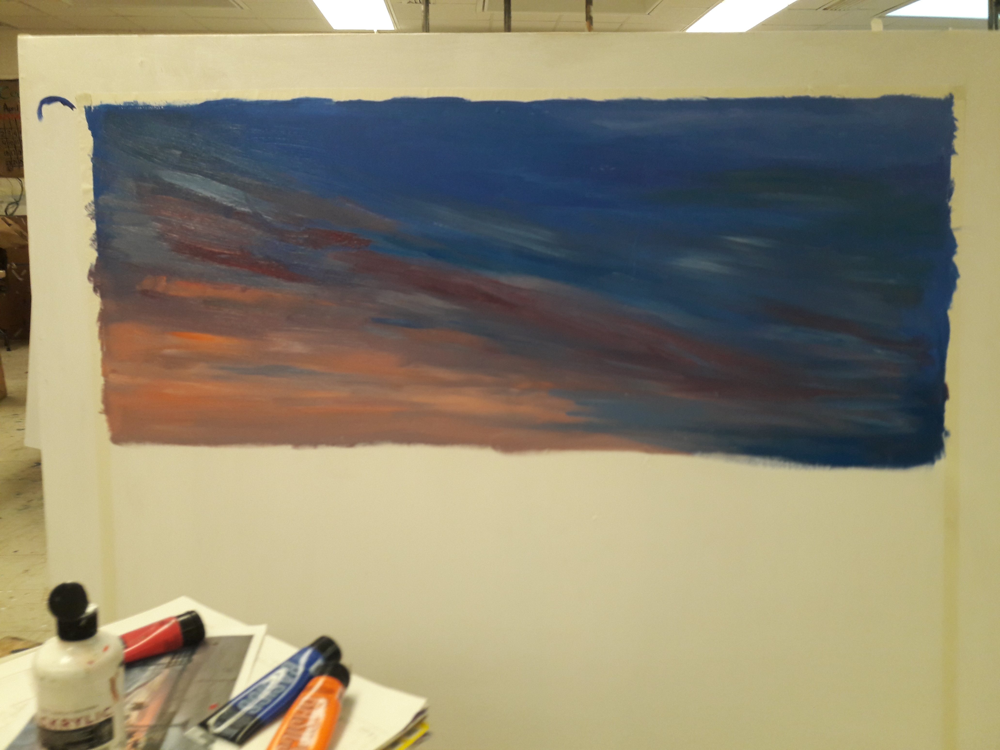 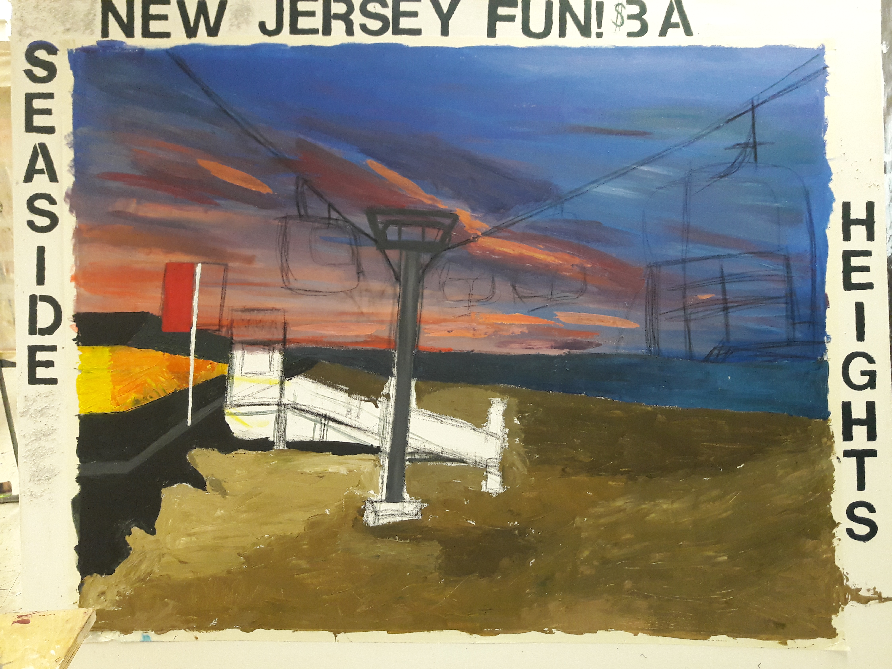
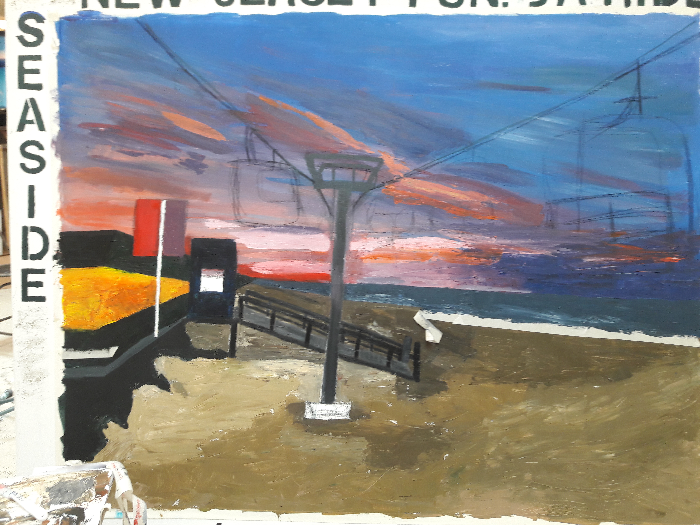
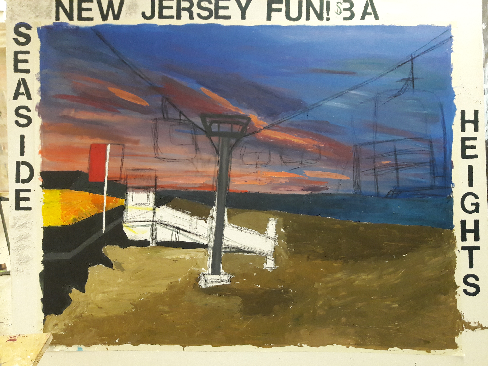
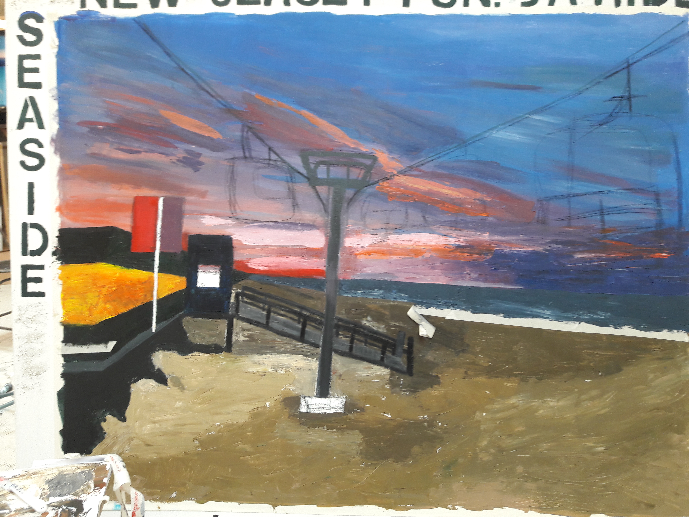

 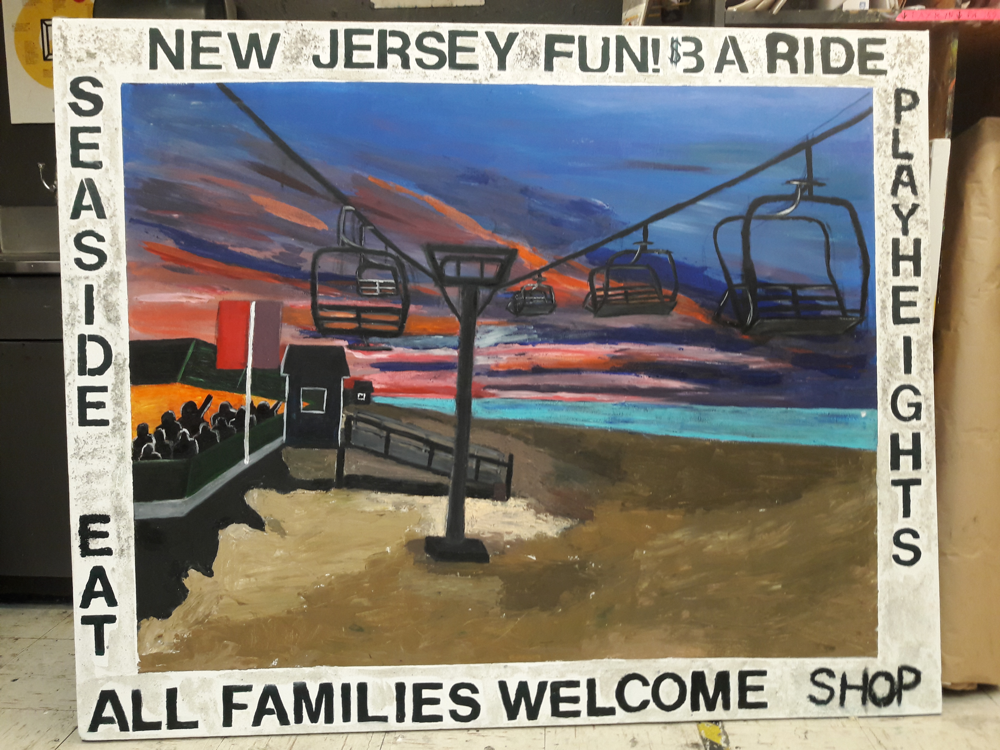
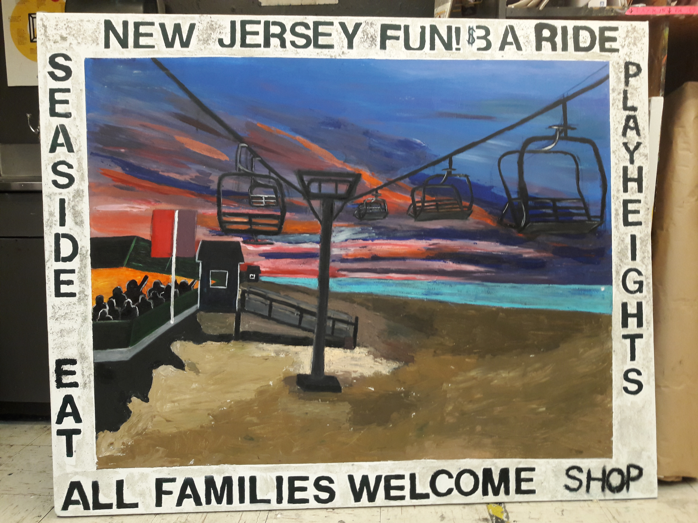
Hi Everyone! Welcome to by webpage about me and my art work! I am a Fine Artist here at Fashion Institue of Technology. I am in my 6th semester. I work with a lot of different mediums, and right now I am trying to figure myself out as an artist.
Email:aconticchio@yahoo.com
Instagram: amandaconticchio
The slideshow below was from my second project this semester. I like to take pictures of my progress, it really helps! We had a choice of doing a dream or childhood memory, so mine was from Seaside, Heights NJ.
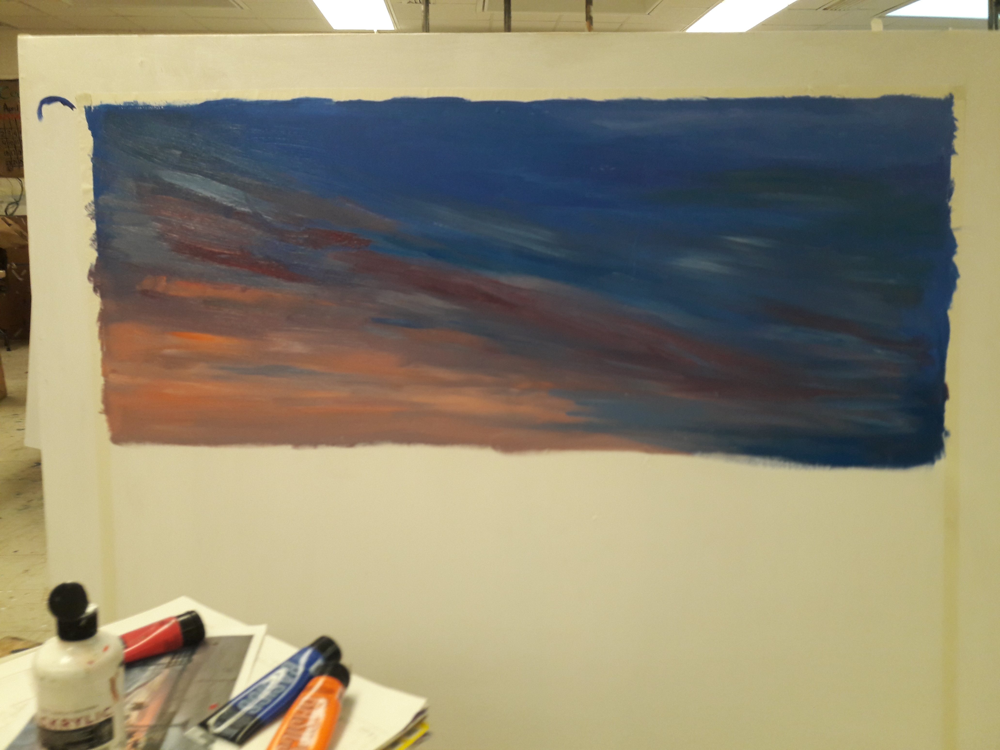
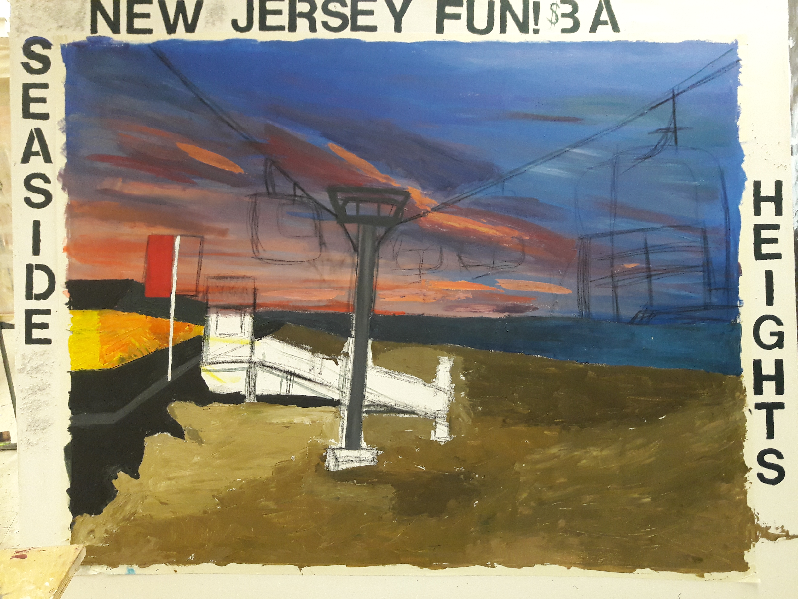
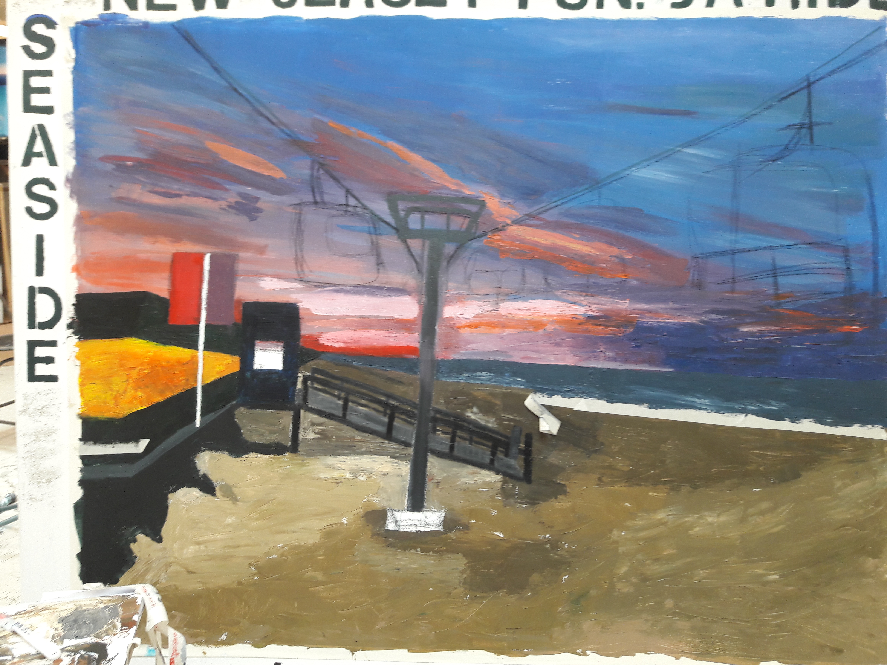
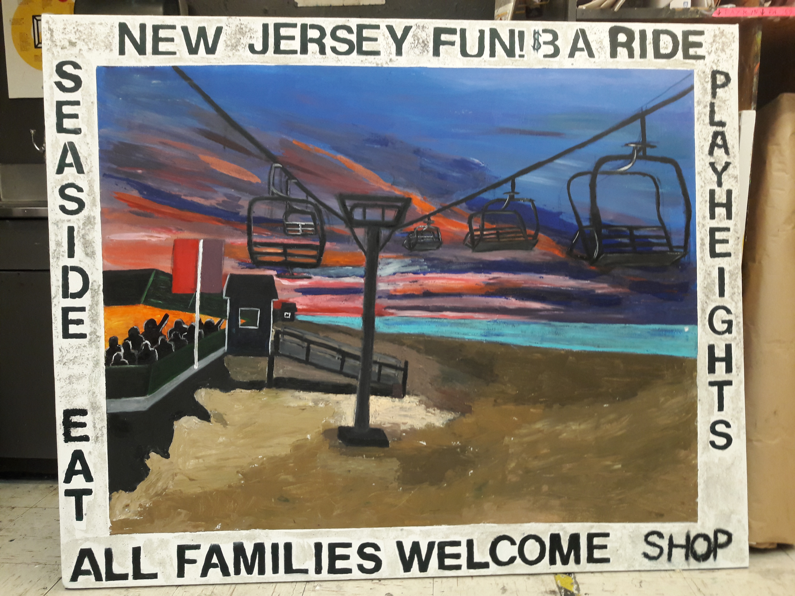
First I taped a border around my canvas since that was a requirment to have. Then, I started off with the sky mixing a bunch of different blues and reds. After I started adding text (another requirment) using stensils. It was alittle difficult to decide what to write because I wanted it to look like an advertisment for Seaside.
Slides 3 to 7 were just me finishing up the piece. I started to pay atention to small details, finishing the text, adding sand to get texture and brighting my colors throughout. Last decision was putting in those tiny silhouettes of the people in the store. It was fun project because of all the memories I have with my family, and I am proud of how the final product turned out!
left to right: plaster casts of a bottle from home printmaking tecnique called cyanotype plaster cast of my feet